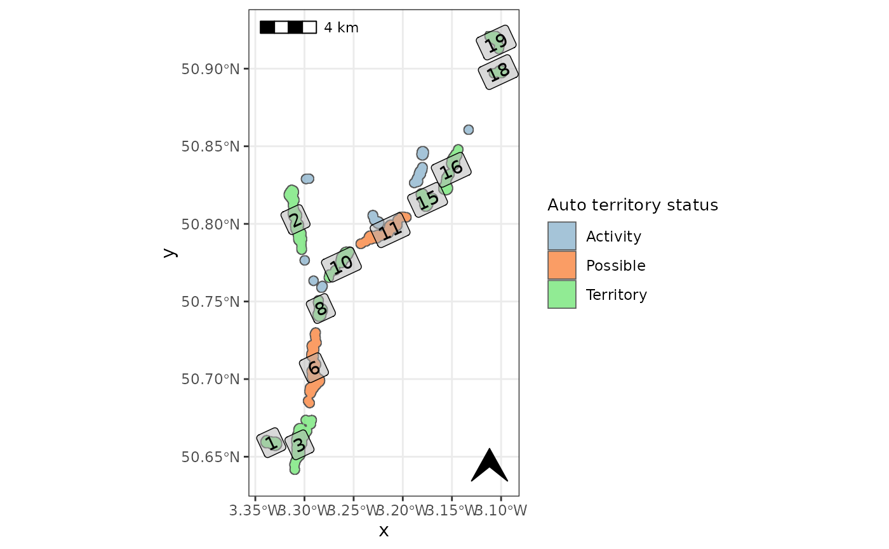

Add user specified classification of territory areas
user_classify.RdOpportunity to add a new column 'user_class' which enables the user to confirm or reject the automated assessment of territory areas.
Arguments
- territory_poly
a territory polygon generated with
beavertools::estimate_territories()- territory
numeric vector containing the ID numbers for areas to be reclassified as 'Territory'. e.g. c(10, 28)
- possible
numeric vector containing the ID numbers for areas to be reclassified as 'Possible'
- activity
numeric vector containing the ID numbers for areas to be reclassified as 'Activity'
Examples
# Here we filter the filter the built in 2019-2020 ROBT feeding sign data `RivOtter_FeedSigns`
# Then pipe this 'sf' object to forage_density.
ROBT_201920 <- RivOtter_FeedSigns %>%
dplyr::filter(SurveySeason == "2019 - 2020")%>%
forage_density(., 'FeedCat')
#> No value supplied for "kd_extent" argument: default extent will be used
#>
#> calculating weighted kde
# Now we load the ROBT `RivOtter_OtherSigns` dataset and filter to the same
# year as the forage density raster.
CS_201920 <- RivOtter_OtherSigns %>%
dplyr::filter(SurveySeason == "2019 - 2020")
# run territory classification
otter_poly <- estimate_territories(ROBT_201920, confirm_signs = CS_201920)
# create the map for checking automated territory classification
check_auto_terr(otter_poly, basemap=FALSE, label=TRUE)
#> Warning: st_point_on_surface may not give correct results for longitude/latitude data

user_classify(otter_poly, territory = c(10, 28))
#> Simple feature collection with 19 features and 9 fields
#> Geometry type: POLYGON
#> Dimension: XY
#> Bounding box: xmin: 305066.8 ymin: 82922.7 xmax: 323174.2 ymax: 114417.3
#> Projected CRS: OSGB 1936 / British National Grid
#> First 10 features:
#> quant quantf id Upper_Thresh Confirm_signs terr_status user_class
#> 1 0.04 0.04 1 Yes Yes Territory Territory
#> 1.1 0.04 0.04 2 Yes Yes Territory Territory
#> 1.2 0.04 0.04 3 Yes Yes Territory Territory
#> 1.3 0.04 0.04 4 No No Activity Activity
#> 1.4 0.04 0.04 5 No No Activity Activity
#> 1.5 0.04 0.04 6 Yes No Possible Possible
#> 1.6 0.04 0.04 7 No No Activity Activity
#> 1.7 0.04 0.04 8 Yes Yes Territory Territory
#> 1.8 0.04 0.04 9 No No Activity Activity
#> 1.9 0.04 0.04 10 Yes Yes Territory Territory
#> mean_fd sum_fd geometry
#> 1 6.446271e+00 1.931303e+04 POLYGON ((306363.5 85553.01...
#> 1.1 3.760834e+00 3.855607e+04 POLYGON ((307984.4 103446.1...
#> 1.2 9.883062e+00 1.021019e+05 POLYGON ((308968.5 87075.83...
#> 1.3 7.160177e-06 6.365397e-03 POLYGON ((308760.1 98358.51...
#> 1.4 1.015215e-05 1.273080e-02 POLYGON ((309188.5 104207.5...
#> 1.5 1.093554e+00 1.285254e+04 POLYGON ((309466.3 93201.71...
#> 1.6 7.120130e-06 6.365397e-03 POLYGON ((309362.1 96904.92...
#> 1.7 3.611413e+00 1.276273e+04 POLYGON ((309721 95485.93, ...
#> 1.8 3.286781e-05 3.819240e-02 POLYGON ((310010.5 96524.21...
#> 1.9 2.393606e+00 1.276271e+04 POLYGON ((311943.9 99016.09...